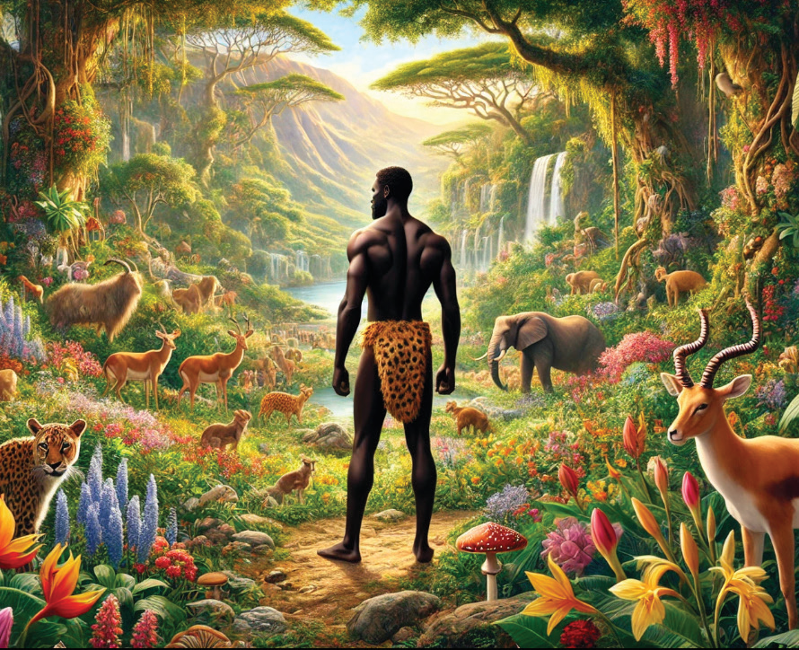

flows around the whole land of Havilah. It is believed that there is a good gold depository here, and the precious stones like Bdellium and Onyx are found here. The second river is Gihon flows in the whole land of Cush. The third river is Tigris (Hiddekel/Chidekel) flows to the east of Assyria and the fourth river is Euphrates (Phrat – Frat).
Visit a nearby river, then:
1. Explain the relevance of rivers in daily life activities.
2. Discuss the causes of river damage.
3. Suggest ways to protect rivers for future use.
Man in the Garden of Eden
As we saw earlier in the second creation story, God created Adam and Eve and inhabited them in the Garden of Eden to cultivate it and safeguard the integrity of the creation. Subsequently, God commanded Adam to eat from every tree of the garden except from the tree of knowledge of good and evil. God warned them that if they eat from the forbidden tree, they shall surely die. Figure 2.3 portrays man in the garden of Eden.

Figure 2.3: Man in the garden of Eden